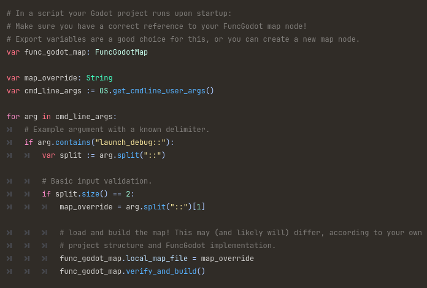
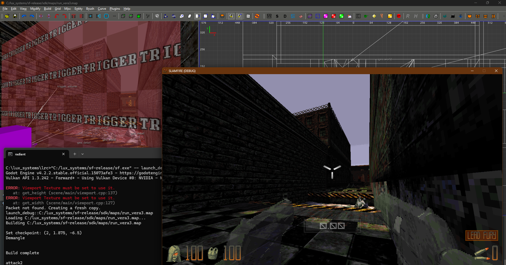

Building from Map Editors
Much like idTech engine games, it's possible to build and launch directly into a map from NetRadiant Custom and TrenchBroom alike. This can be quite a helpful tool for mappers to quickly try out their creations without a lengthy startup or debug menu process.
Godot project setup
Regardless of which map editor you use, you'll need to check for any command line arguments.


NetRadiant Custom
NetRadiant itself provides some basic scripting for this process, defined in the gamepack folder.
For example, in Sinewave's game SLAMFIRE, the path is <path_to_radiant>\gamepacks\sfbase.game\default_build.xml.
In Radiant, navigate to
Build > Customize...; here, we can see some build variables available:

<?xml version="1.0"?>
<project version="2.0">
<var name="game">"[EnginePath]sf.[ExecutableType]"</var>
<build name="Test map in engine">
<command>[game] -- launch_debug::"[MapFile]"</command>
</build>
Restart NetRadiant, and you should see a new option in the build menu.


